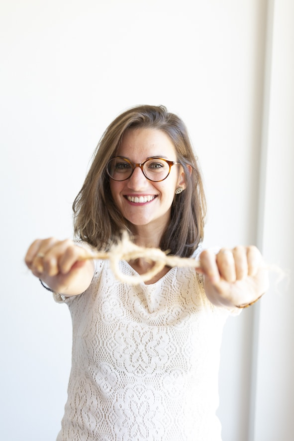

Coaching individual · Ansiedad y carga mental
Ansiedad y carga mental:
la sensación de no parar nunca.
Rumias lo mismo durante horas, te acuestas cansada y te levantas igual, y dices que sí a todo aunque por dentro estés pidiendo un descanso. Eso también es ansiedad. En una sesión gratuita de 45–60 minutos la ponemos sobre la mesa y te llevas una primera herramienta para empezar a gestionarla.
Empieza por aquí
¿Te reconoces en algo de esto?
Así es como se nota la ansiedad y la carga mental en el día a día. No hace falta que marques todas las casillas — con una sola ya es momento de mirarlo.
En la mente
-
Rumiación constante: le das mil vueltas al mismo problema durante horas sin llegar a ninguna solución.
-
Autocrítica feroz: sientes que no eres lo bastante buena en el trabajo, en la pareja o en la familia.
En el cuerpo
-
Agotamiento crónico: te despiertas cansada aunque hayas dormido tus horas.
-
Tensión y tirantez: cuello, hombros y mandíbula apretados sin darte ni cuenta.
En el día a día
-
Niebla mental: se te olvidan las llaves, una cita, o pierdes el hilo a media frase.
-
Dificultad para desconectar: ni los findes ni las vacaciones consiguen que la cabeza pare.
-
Urgencia constante: la sensación de que el tiempo nunca te alcanza, hagas lo que hagas.
En tus relaciones
-
Miedo a defraudar: dices que sí a todo para no generar conflicto, y te dejas para el final.
-
Irritabilidad: saltas con quien menos se lo merece porque ya no te queda paciencia.
No estás exagerando
Esto no es que seas débil. Es ansiedad — y la ansiedad se puede gestionar.
No es que "no sepas organizarte" ni que tengas que aguantar más. Es que llevas demasiado tiempo siendo tú quien sostiene, recuerda y anticipa todo, para todos — y a ti, ¿quién te sostiene?
El primer paso no es hacer más. Es pararte un momento y mirar de qué está hecha esa ansiedad.

Tu primer paso, sin coste
Empecemos con una sesión gratuita de descubrimiento
Una videollamada de 45–60 minutos, solo para ti. Nada de venta, nada de compromiso: miramos juntas qué hay detrás de esa ansiedad y esa carga, y sales con algo concreto en las manos.
45–60 minutos por videollamada, al ritmo que necesites — sin prisa y sin juicio.
Te llevas un ejercicio práctico: ves con claridad dónde se te va la energía, detectas por dónde empezar sin agobiarte, y esbozas un primer objetivo concreto.
Decides tú si quieres seguir. Sin ningún tipo de presión ni permanencia.
Si decides seguir
60 minutos por sesión.
60€ la sesión suelta, después de tu sesión gratuita.
Online, por videollamada — o presencial en Zaragoza si te viene mejor.
Nada de paquetes cerrados. Decidimos juntas la frecuencia y la duración del proceso según lo que estés atravesando — cada proceso lleva su tiempo.
Cómo es, de verdad
Qué pasa en esa primera llamada
Nos conectamos y empezamos por donde tú estés: una frase suelta, un peso en el pecho, algo que llevas meses sin decir en voz alta. No traigo un cuestionario clínico ni un diagnóstico. Traigo preguntas que van al hueso, silencio cuando hace falta, y un ejercicio práctico para poner forma a lo que sientes.
A veces te voy a alentar, a veces te voy a confrontar, a veces nos vamos a reír — pero siempre desde la misma empatía. Al colgar, algo se ha movido. No siempre es cómodo. Casi siempre es alivio.
Esto es para ti si ya sabes que cargas con demasiado y estás cansada de sostenerlo sola. No hace falta que sepas por dónde empezar. Para eso está esta primera sesión.
Lo que dicen
De quienes ya se sentaron aquí
“Vivía en bucle constante, miles de cosas en mi cabeza sin resolver, dudas, frenos... Sentía como un saco pesado lleno de piedras. Con Carmen fuimos sacando, indagando en ese saco, mirando cada piedra, para desde ahí reencontrarme.
— Elizabeth G.
“Me sorprendió la profundidad de la indagación que me ayudó a hacer con sus preguntas, su observación y su instinto. Me sentí a salvo a pesar de no conocerla de nada — súper fácil trabajar con ella, y muy humana.
— Ana T.
“Mi proceso con Carmen ha sido un antes y un después. Fui trabajando todas esas creencias hasta eliminarlas, y ahora ya no hay nada que me detenga. Es una persona muy cercana que transmite confianza desde el minuto uno.
— Manuela V.
Pendiente de subir
Pendiente de subir
Cuéntame tu caso
¿Hablamos de tu ansiedad?
Cuéntame un poco de tu situación y te responderé personalmente para encontrar el primer hueco para tu sesión gratuita. Si lo prefieres, escríbeme directo por WhatsApp.
Tú decides